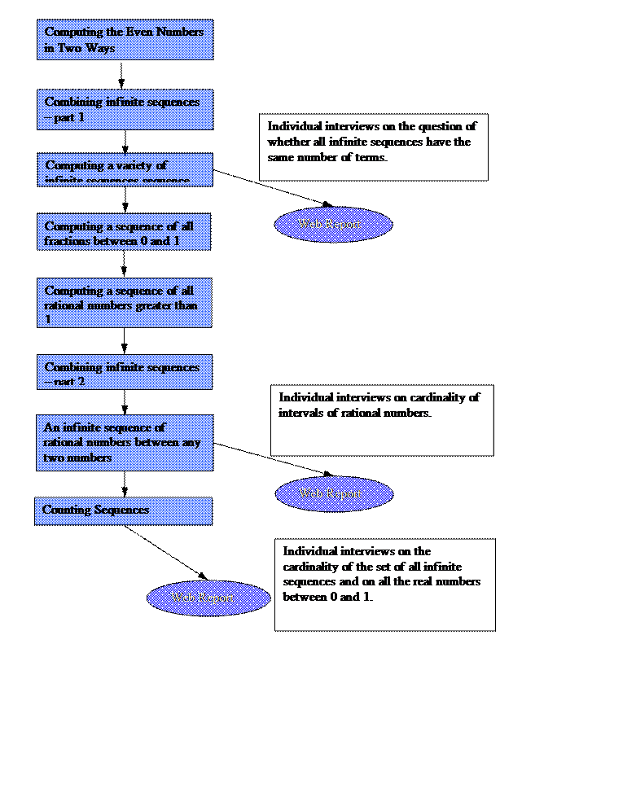

|
|
Activity Sequence 3: Cardinality of Infinite Sequences |
|
Version: 7 |
|
Table of Contents
General aims of activity sequence
Activity 1: Computing the Even Numbers in Two Ways.
Activity 2: Combining infinite sequences – part 1.
Activity 3: Computing a variety of infinite sequences
Activity 4: Computing a sequence of all fractions between 0 and 1
Activity 5: Computing a sequence of all rational numbers greater than 1
Activity 6: Combining infinite sequences – part 2.
Activity 7: An infinite sequence of rational numbers between any two numbers
Activity 8: Counting sequences
· Exploring the cardinality of integers, even numbers, perfect squares, fractions, rational numbers, and real numbers.
· Cardinality of infinite sets is an important part of mathematics. The topic is full of surprises and apparent contradictions that have confused mathematicians and philosophers for millennia.
Deliverable 2.1.1 Description
of Knowledge Domain (a): Numbers, Big Numbers and Infinity
This lays down the broad aims and discusses common learning obstacles
reported in the literature, and positions our work with respect to others.
Dependence: This should be after convergence activity sequence since the last activity depends upon having explored the convergence of the sum of inverse powers of 2.
We are conducting this activity in at the Theydon Bois Primary School near London. Our preliminary testing of this sequence is with four children aged 10-12. Sessions vary from 60 to 120 minutes. Most activities are expected to take a full session. (Perhaps 4 and 5 can be a single session.) There are two or three sessions per week.
We aim to enable the children to learn to think about infinite sets in new ways:
· To see how a proper subset can have a one-to-one correspondence with the whole set.
· To understand why, for example, the set of every millionth positive integer has the same cardinality as the set of all rational numbers.
· To understand that no sequence can be constructed for the real numbers or all infinite sequences.
Participants will be instructed to share their work using personal web reports when appropriate. They will also be encouraged to review other's work. Individual work will be presented and inspected in group discussions, to promote a culture of respectfully critical review.
Group discussions will be used as a tool to exemplify the failure of empirical data and “gut feelings” when assessing statements about infinity (or more precisely, about cardinality).
Participants will be prompted to update their personal reports frequently. These reports will allow informal discussion across sites. A structured reflective group report will only be authored at the end of the sequence. The rationale behind this is that we expect students’ perceptions to change as the sequence proceeds, and asking them to record their intermediate thoughts might be confusing both for them and for external readers.

That the children can discuss the cardinality of a wide variety of infinite sequences in a way that demonstrates they understand the underlying concepts.
Our preliminary plans are to conduct interviews using the questions listed with activities 3, 7, and 8. We will also analyze the programs constructed by the children and their worksheets, and study carefully the web reports and the discussions while the web reports were written.
To enable the children to explore and understand how the same set can be a proper subset of another and yet be in one-to-one correspondence.
They take the two copies of the stream of natural numbers and give one to a robot that doubles each element and gives the other copy to a robot that throws away every other element.
This is a great topic for discussion/debate. Normally good methods for determining if some set is larger than another (one-to-one correspondence and part/whole relationship) are in conflict. What does bigger mean?
See how two infinite sequences can be combined to form a single sequence of the same cardinality. To see that the integers can be placed in one-to-one correspondence with the natural numbers.
A robot is constructed to make the negative integers from the positive integers. Another robot is constructed that takes in two streams and alternately outputs an element from one and then the other. This robot is used to combine the positive and negative integers to generate all the integers.
Discuss/debate whether the set of all integers really has the same cardinality as the set of natural numbers.
To discover that all (computable) sequences (that the children invent) are countable and therefore have the same cardinality.
Encourage children to generate infinite sequences that appear to have relatively few elements (e.g. every millionth integer, perfect squares, or the powers of 2) and sequences that seem large (e.g. the sequence whose elements are n/1000000).
They could share and discuss the cardinality of the sequences made by the different teams, again there is likely to be a range of contradictory responses. A group web report is generated.
Do the students recognize that there is a conflict between the notion of size based upon parts and wholes and the notion of size based upon one-to-one correspondences? Do they understand why they need to abandon the intuitions based upon part/whole relations between finite sets? Do they understand that combining infinite sets does not result in a larger set? Do they understand one can remove an infinite number of elements from a set without changing its cardinality?
Individual interviews on the topic: Do all infinite sequences have the same number of terms? The questions to be asked include:
1. When you can say two infinite sequences are the same size?
2. Can you give an example of two infinite sequences that are different sizes? If not, why not?
3. If a sequence includes duplicates is it still countable?
4. Can you describe sequences that can’t be programmed?
5. Are there infinite sequences that have so many terms they can’t be counted?
That it is possible to generate a sequence of all proper fractions and that its cardinality is the same as that of the natural numbers.
Eventually the children build a team of two robots to generate 1/2, 1/3, 2/3, 1/4, 2/4, 3/4, 1/5, 2/5 … Note that the more obvious enumerations will fail. E.g. 1/2, 1/3, 1/4, 1/5, 1/6, … 2/3, 2/4, 2/5, 2/6, …
Discuss/debate whether this really has the same cardinality as the natural numbers (which seems very unlikely but is true!). The simplest robots produce duplicates (e.g. 1/2, 2/4, 3/6 …). Does this matter? Can anyone figure out how to get rid of them?
To see that it is simple to generate all the rational numbers greater than 1 by taking the reciprocal of each proper fraction.
A simple robot is constructed that takes in a number and puts out its reciprocal. Using this with the robots of activity 4 produces all the rational numbers greater than 1.
Discuss/debate whether the rational numbers greater than 1 really has the same cardinality as the rational numbers between 0 and 1 (which again, is very surprising and true).
See how two infinite sequences can be combined to form a single sequence of the same cardinality.
A simple robot is constructed that takes in two streams and alternately outputs an element from one and then the other. This robot is used to combine the rational numbers between 0 and 1 and those greater than 1 to generate the sequence of all positive rational numbers. The positive and negative rational numbers are combined with the same tool.
Discuss/debate whether all the rational numbers really has the same cardinality as the natural numbers.
To discover that between any two numbers (even if they are very close) there is not only a rational number but an infinite number of them.
A robot can take each element of the stream of proper fractions and by doing a multiplication and an addition produce all the rational numbers between any two numbers.
Update/resume the earlier discussion about whether all the rational numbers really has the same cardinality as the natural numbers since the rational numbers are so “dense”. A web report is generated.
Do the students understand that despite the fact that there are an infinite number of rational numbers between any two rational numbers that the entire set is countable?
Individual interviews on cardinality of intervals of rational numbers. The questions to be asked include:
1. Is there always a number between any two rational numbers?
2. How many numbers are there between any two rational numbers?
3. Are the rational numbers countable?
4. Are all the rational numbers between 0 and 1/1000000 countable?
5. Could all the rational numbers “dance” with all the rational numbers between 0 and 1/1000000?
To understand that sequences cannot be counted. And a special case of sequences of digits implies that real numbers can’t be counted.
A team of robots is provided that given a sequence of sequences generates a sequence of the first term of the first sequence, the second term of the second sequences and so on. Then another robot alters every term in the sequence to generate a sequence that wasn’t in the enumeration. Finally a connection to real numbers is made.
A web report is generated based upon the questions listed below.
Do the students see that not every set is countable. Do they understand that diagonal program they used in this activity means that any attempt to produce a sequence of will fail for uncountable sets. In particular, that the set of all infinite sequences and the real numbers between 0 and 1 are of a different order of infinity.
Individual interviews on the cardinality of the set of all infinite sequences and on all the real numbers between 0 and 1. The questions to be asked include:
1. Is the sequence of all sequences countable?
2. Is the sequence of all sequences of digits countable?
3. Is the sequence of numbers between 0 and 1 corresponding to sequences of digits countable?
4. If the sequence of numbers between 0 and 1 are not countable does that mean there are more numbers between 0 and 1 than rational numbers between 0 and 1?
5.
Extra credit. Are there numbers between
0 and 1 that cannot be described with a finite number of words?
|
Tool |
Description |
Used in |
Defined in |
|
Diagonal |
Generates a sequence of the first element of the first sequence, the second element of the second sequences and so on |
Activity 8: Counting Sequences |
New tool |
|
No Copies |
Removes duplicates from the fractions between 0 and 1 |
Activity 4: Computing a sequence of all fractions between 0 and 1 |
New tool |